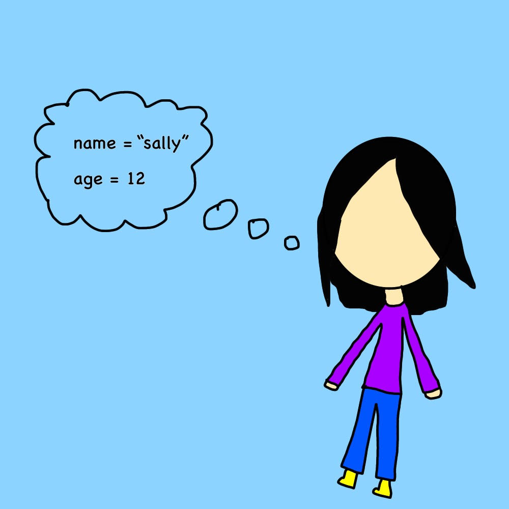

In Math: A variable is a letter or symbol that represents an unknown quantity.
In Computer Programming: A variable is a storage location, or placeholder for storing information in a computer.
Naming Variables
To create a variable in a program, you have to declare it. When you declare a variable, you are telling the computer to make space for information, and give it a name.
The name of the variable is the identifier. The information the variable contains is the value.
Rules for naming or declaring variables:
- Variable names should be short and should clearly describe what the variable represents.
- Variable names must begin with a leter of the alphabet, and they can contain letters, numbers, and some characters.
To assign a value to a variable, use the equal sign (=).The identifier goes on the left of the equal sign, and the value goes on the right. You can change the value of your variable anytime you want.
Types of Information Variables can Store
Variables can store many types of information, or data types;
String Variables: Variables that can store any kind of character in their value. String values are always placed inside of quotation marks.
Numeric Values: Variables that can store numeric values, including integers (positive and negative numbers), decimals, fractions, and algebraic expressions.
Boolean Values: Variables that only have two possible outcomes, "true" or "false".
Lists: An array variable stores an entire list of information, which is useful when you have multiple pieces of information you want to store in one place.

Why are Variables Important?
Variables are used to store information and data in a computer. Instead of just entering the information into the program, variables can be used to represent data and information by giving it a descriptive name. Variables can be used for many purposes.